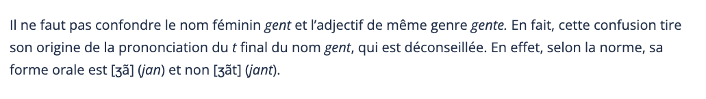

5 Évolutions morpho-syntaxiques
5.1 L’évolution des formes nominales
5.1.1 La période allant du latin aux premiers textes en langue française (latin → très ancien français (TAF))
comment distingue-t-on les parties du discours ?
Par l’inventaire de leurs catégories
Pour les noms :
nombre
genre
cas
‼️ Jusqu’au MF
- Le nom se distingue des adjectifs, pronoms, déterminants parce que son genre est fixe
En latin, l’expression des trois catégories est souvent conondue dans un et un seul morphème.
Un morphème combine plusieurs catégories:
- langue indo-européenne de type flexionnel
Latin classique
deux nombres
singulier
pluriel
trois genres
masculin
féminin
neutre
six cas
nominatif
vocatif
accusatif
génitif
datif
ablatif
5 déclinaisons
Afin de rendre la présentation aussi simple que possible, quatre classes nominales de base sont présentées
Classe 1 : Noms, adjectifs et participes masculins du type mur(s) / bon(s)
Classe 2 : Noms, adjectifs et participes féminins du type fille(s) / bone(s)
Classe 3 : Noms, adjectifs et participes féminins se terminant par une consonne du type flor(s) / grant (granz)
Classe 4 : Noms et adjectifs à deux radicaux du type sire / mieudre
5.1.1.1 Cas sujet et cas régime
Le latin vulgaire réduit le nombre des cas, tant pour la déclinaison du nom que pour celle de l’adjectif (la déclinaison des pronoms sera plus résistante).
Les particularités de la prononciation du latin vulgaire ont en effet des conséquences importantes dans le domaine de la déclinaison nominale :
causam (acc. sing) se prononce en latin vulgaire comme le latin classique causă (nom. sing) et causā (abl. sing.) ;
murum (acc. sing.) se prononce comme murō (dat./abl. sing.).
Il en est résulté qu’au Ve siècle, le latin vulgaire ne connaissait plus qu’une déclinaison bicasuelle, c’est-à-dire une déclinaison réduite à deux cas pour l’ensemble des noms et adjectifs : le nominatif et l’accusatif.
La déclinaison nominale bicasuelle est clairement attestée dans les Serments de Strasbourg, où Deus, Lodhuuigs, Karlus s’opposent à Deo, Loduuuig, Karlo/Karle :
Pro Deo amour et pro christian poblo et nostre commun saluament, dist di in avant, in quant Deus sauir et podir me dunat, si saluarai eo cist meon fradre Karlo et in aiudha et in cadhuna cosa, si cum om per dreit son fradra saluar dift, in o quid il mi altresi fazet. Et ab Ludher nul plaid nunqua’m prindrai qui, meon uol, cist meon fradre Karle in damno sit.
Si Lodhuuigs sagrament que son fradre Karlo iurat conseruat, et Karlus, meos sendra, de suo part non lo’s tanit, si io returnar non l’int pois, ne io ne neuls cui eo returnar int pois, in nulla aiudha contra Loduuuig nun li iu er.
5.1.1.1.1 Classe 1
Noms issus de parisyllabiques masculins latins : l’essentiel des noms et adjectifs masculins de l’AF, de forme parisyllabique, c’est-à-dire des formes ayant le même nombre de syllabes pour les deux formes casuelles, contrairement aux formes imparisyllabiques.
| Forme latine (Singulier) | Forme latine (Pluriel) | Cas | Ancien français (Singulier) | Ancien français (Pluriel) |
| murus | muri | Cas Sujet | (li) murs | (li) mur |
| muru(m) | muros | Cas Régime | (le) mur | (les) murs |
Sous-classe : masculins parisyllabiques dont l’étymon latin n’a pas d’-s à la forme du nominatif singulier, comme le nom latin magister > AF maistre(s), l’adjectif latin asper > AF aspre(s), qui en AF reçoivent un -s analogique au cas sujet singulier dans les dialectes qui conservent la déclinaison
| Forme latine (Singulier) | Forme latine (Pluriel) | Cas | Ancien français (Singulier) | Ancien français (Pluriel) |
| magister ?? | magistri | Cas Sujet (CS) | (li) maistre(s) | (li) maistre |
| magistru(m) | magistros | Cas Régime (CR) | (le) maistre | (les) maistres |
5.1.1.1.2 Classe 2
la classe la plus importante des noms féminins, référant à des animés et des inanimés
abandon de la déclinaison casuelle, non seulement au singulier, où les formes se confondaient déjà en latin tardif…
mais aussi au pluriel, où les formes auraient pu conserver une déclinaison casuelle à l’aide de la présence / absence de l’-s final. Néanmoins, aucune forme du féminin de cette classe ne garde de trace de déclinaison
| Forme latine (Singulier) | Forme latine (Pluriel) | Cas | Ancien français (Singulier) | Ancien français (Pluriel) |
| femina | feminae -> feminas | Cas Sujet (CS) | (la) feme | (les) femes |
| femina(m) | feminas | Cas Régime (CR) | (la) feme | (les) femes |
5.1.1.1.3 Classe 3
de noms et adjectifs féminins qui se terminent en AF par une consonne : la classe 3. Les noms réfèrent avant tout à des inanimés comme flors / flor, maisons / maison, mers / mer, ou à des notions abstraites comme citez / cité, vertuz / vertu.
étymon latin appartient généralement à la troisième déclinaison latine
le paradigme étant devenu parisyllabique dès les premiers textes en français. Il s’agit sans doute d’une régularisation analogique sur le paradigme masculin, dans la mesure où ces cas sujet analogiques existent en particulier dans les dialectes qui conservent la déclinaison
| Forme latine (Singulier) | Forme latine (Pluriel) | Cas | Ancien français (Singulier) | Ancien français (Pluriel) |
| gens -> gentis | gentes | Cas Sujet (CS) | (la) gen(z) | (les) gens /genz |
| gente(m) | gentes | Cas Régime (CR) | (la) gent | (les) gens /genz |

5.1.1.1.4 Classe 4
Il existe un certain nombre de sous-classes comprenant non seulement des formes du masculin, mais aussi du féminin. Les noms réfèrent essentiellement à des animés, surtout à des humains.
Le cas sujet pluriel des masculins des diverses sous-classes s’aligne sur celui des masculins parisyllabiques
| Forme latine (Singulier) | Forme latine (Pluriel) | Cas | Ancien français (Singulier) | Ancien français (Pluriel) |
| latro | latroni | Cas Sujet (CS) | (li) lerre(s) | (li) larron |
| latrone(m) | latrones | Cas Régime (CR) | (le) larron | (les) larrons |
Le cas sujet féminin conserve l’absence étymologique de distinction casuelle au pluriel, caractéristique de tous les noms (et adjectifs) féminins.
Par contre, le cas sujet singulier féminin garde la possibilité de se distinguer à l’aide de l’-s final.
| Forme latine (Singulier) | Forme latine (Pluriel) | Cas | Ancien français (Singulier) | Ancien français (Pluriel) |
| soror | sorores | Cas Sujet (CS) | (la) suer(s) | (les) serors |
| sorore(m) | sorores | Cas Régime (CR) | (la) soror | (les) serors |
5.1.1.1.5 Exercices
Retrouvez le cas des mots en gras ci-dessous:
Sa suer est d’une chambre issue (WaceBrut, v. 14273 : ‘Sa soeur est sortie d’une chambre’)
- Cas sujet singulier
Tristran s’en torne avoc son mestre. (BeroulTristan, v. 2451 : ‘Tristan s’en va avec son maître d’armes’)
- Cas régime singulier :
cil qui de ce furent mestre les ont d’erbe fresche jonchiez. (RenartDole, déb. 13e s., v. 337 : ‘ceux qui étaient chargés de préparer des lieux les ont jonchés d’herbe fraîche’)
- Cas sujet pluriel :
par le conseil de ses granz mestres (RenartDole, v. 2840)
- Cas régime pluriel :
la est remés la genz menue (Eneas1, v. 3193 : ‘là sont restées les petites gens’)
- Cas sujet singulier :
Ad une voiz crient la gent menude (StAlexis, v. 531 : ‘Les petites gens crient d’une même voix’)
- Cas sujet singulier :
Turnat sa teste vers la paiene gent <les païens> (Roland, v. 2360)
- Cas régime singulier :
anviron lui vienent ses genz (Eneas1, v. 5922 : ‘Ses gens viennent autour de lui’)
- Pluriel : sujet
Se puis veeir ma gente sorur Alde (Roland, v. 1720 : ‘si je peux voir ma soeur Aude’)
- Cas régime singulier :
trois faees serors la firent, (Eneas1, v. 4015 : ‘trois fées soeurs la firent’)
- Pluriel : sujet
il parolent des deus serors (TroyesYvain, fin 12e s., v. 6158-6159 : ‘ils parlent des deux soeurs’)
- Pluriel :
une fame estoit dame de tot lo regne. (Eneas, v. 553 : ‘Une femme régnait sur tout le pays’)
- Singulier : sujet
Ne reverrunt lor meres ne lor femmes. (Roland, v. 1402 : ‘Ils ne reverront ni leurs mères, nileurs femmes’)
- Pluriel : régime
Mot ot li mestre Tristran chier (BeroulTristan, fin 13e s., v. 971 : ‘Son maître d’armes avait beaucoup d’affection pour Tristan’)
- Cas sujet singulier :
5.1.1.2 Le Genre
Des trois genres latins, les langues romanes conservent le masculin et le féminin, en gardant quelques vestiges du neutre.
En principe, les noms français conservent le genre étymologique, sauf le neutre, mais il se produit des changements :
les noms abstraits imparisyllabiques masculins en -or –> des parisyllabiques féminins
- calor → ͦcaloris > chaleur(s) ; dolor →ͦdoloris > douleur(s)
les noms d’arbres étaient en latin féminins, ils sont tous devenus masculins,
- fraxinus > (le) fresne ; pinus > (le) pin.
les noms neutres du latin sont pour la plus grande majorité réanalysés comme masculins. dû au fait que la forme du singulier neutre latin ressemble au masculin accusatif singulier latin.
- argentum → (li) argenz / (le) argent ; aurum → (li) ors / (le) or ; cornu → (li) corz / (le) cor(n) ; velum → (li) voils / (le) voil ; vinum → (li) vins / (le) vin
au pluriel, les neutres latins se terminent en -a, ce qui les rend similaires à la forme du singulier nominatif de la plus grande classe des féminins, la classe 2. Par analogie, un certain nombre de noms neutres pluriels en -a ont été réanalysés comme des féminins singuliers,
arma → (la) arme ; corn(u)a → (la) corne ; festa → (la) feste ; folia → (la) feuille (avec un sens parfois collectif : le feuillage); labra → (la) lèvre ; opera → (la) oeuvre ; vela → (la) voile
Ainsi, dans certains cas, deux noms français proviennent du même neutre latin, un nom masculin dérivé du singulier, et un nom féminin du pluriel. Ceci vaut par exemple pour les paires suivantes : cor(n) – corne ; grain – graine ; tourment – tourmente ; vaisseau – vaisselle.
vs it il labbro le labbra
il velo le vela?
foglio/fogli / foglia foglie
5.1.2 La période de l’ancien français (AF) (12e et 13e s.)
5.1.3 La période du moyen français (MF) et du français pré-classique (14e s. – fin du 16e s.)
5.1.4 La période « classique » (17e et 18e s.), qui constitue la période de référence pour le
français standard du 20e s.